SAME N
Same count. Different claims.
What can a shared count promise?
- Frozen
- N = 1,536
- Free
- generative story
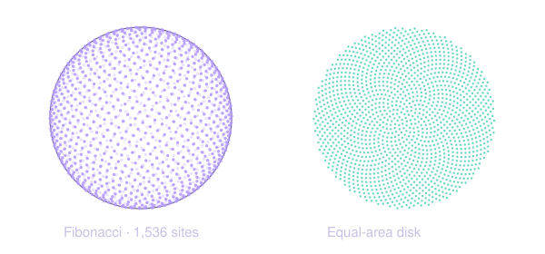
SAME SHADOW
Same projection. Different bodies.
What did the view discard?
- Frozen
- one silhouette
- Free
- the body behind it
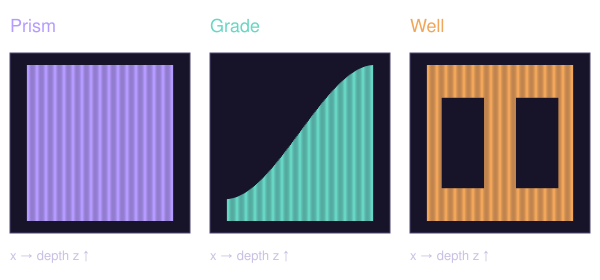
SAME EARTH
Same planet. Different frames.
What did the projection change?
- Frozen
- one sampled surface
- Free
- projection

SAME SITES
Same generators. Different territory.
Who defined nearest?
- Frozen
- seven generators
- Free
- metric
SAME SAMPLES
Same samples. Different assumptions.
What does one measurement control?
- Frozen
- one measured set
- Free
- interpolating assumptions
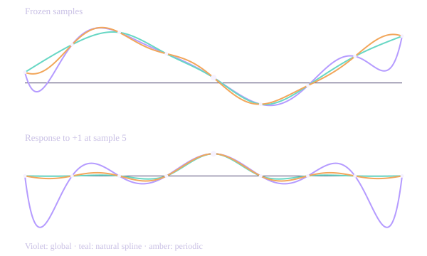
SAME VOLUME
Same target budget. Different obligations.
What does better mean?
- Frozen
- target mean density 0.40
- Free
- obligation
SAME MARGINALS
Same x. Same y. Different pairing.
What did the separate lists lose?
- Frozen
- same x, same y
- Free
- pairing
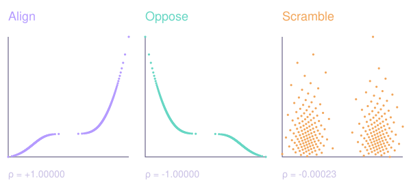
SAME AVERAGE
Same averages. Different groups.
Whose weights made the average?
- Frozen
- 400 records · A 60%, B 40%
- Free
- group membership
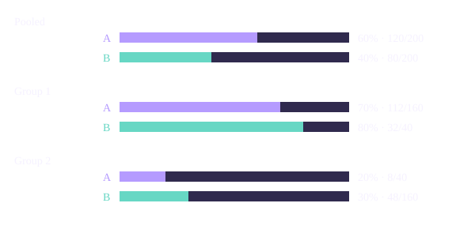
SAME MAGNITUDE
Same Fourier magnitude. Different structure.
What did magnitude leave out?
- Frozen
- one Fourier magnitude
- Free
- phase
SAME LAW
Same rule. Different histories.
What else does a prediction need?
- Frozen
- update rule · domain · grid
- Free
- initial position
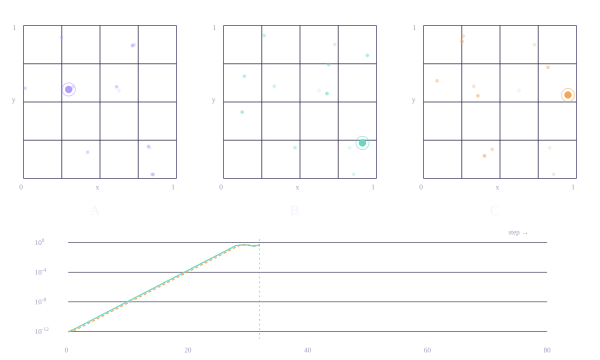
SAME MOVES
Same moves. Different place.
What did order change?
- Frozen
- six rigid motions · λ = 1
- Free
- composition order
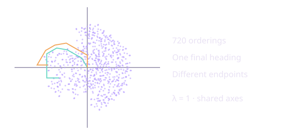
SAME DIVERGENCE
Same sources. Different flow.
What did the sources leave open?
- Frozen
- source field ρ · witness flux
- Free
- divergence-free component
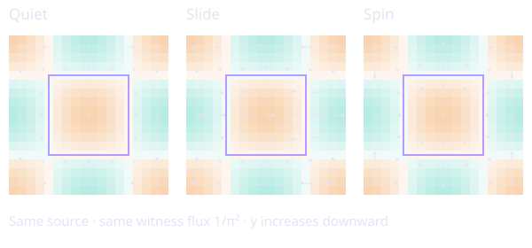
SAME DEGREES
Same neighbors counted. Different worlds.
Can every local count match while the network comes apart?
- Frozen
- 12 vertices · degree 3 · 18 edges · positions
- Free
- who connects to whom
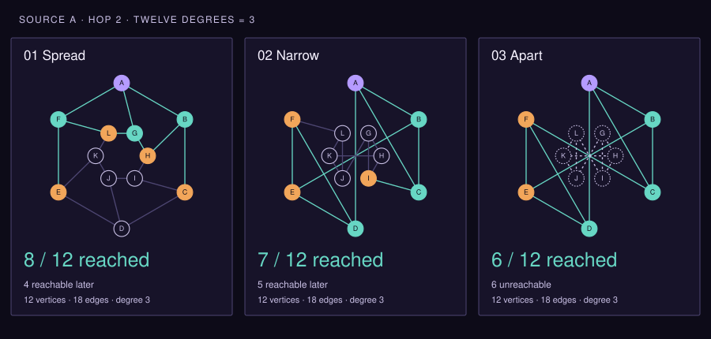
SAME IMPULSE
Same push integrated. Different motion.
How much does the timing of a push matter?
- Frozen
- applied impulse · oscillator · starting rest
- Free
- force timing
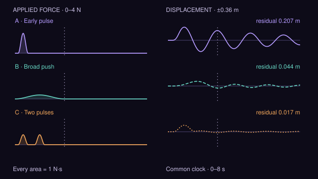
SAME EIGENVALUES
Same eventual stability. Different excursions.
Does eventual decay mean a disturbance never grows?
- Frozen
- eigenvalues −1, −2 · start (0, 1) · units · norm
- Free
- off-diagonal coupling k
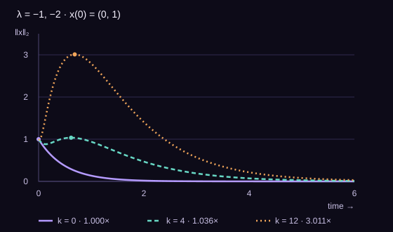